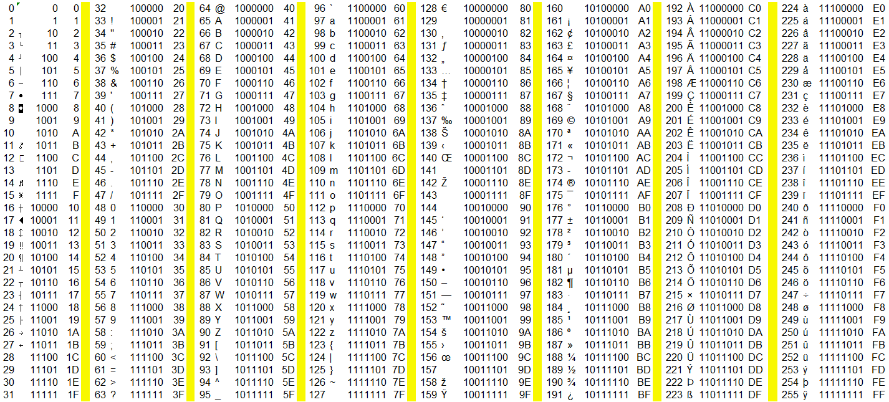

Einführung in C++
C++ ist eine mächtige, weit verbreitete und von der ISO genormte Programmiersprache, die von Bjarne Stroustrup als Erweiterung der Sprache C entwickelt wurde und sowohl die effiziente, maschinennahe Programmierung als auch die objektorientierte Programmierung auf hohem Abstraktionsniveau ermöglicht. Sie wird für die Entwicklung von Systemsoftware wie Betriebssystemen, Hochleistungsanwendungen wie Spielen oder Bildbearbeitungsprogrammen und eingebetteten Systemen eingesetzt. Ihre Stärke liegt in der Kombination von Geschwindigkeitskontrolle und Flexibilität, wobei die Standardbibliothek eine breite Palette an Funktionen bereitstellt.
Visual Studio Code & C++
Um ein C++ Programm auszuführen, benötigt man zwei Dinge:
Unter Windows:
- einen Texteditor, in dem man sogenannten .cpp-Programmcode (oder auch Quellcode) schreiben kann. Programme wie Word etc. sind dafür nicht geeignet. Es empfiehlt sich eine Entwicklungsumgebung wie Visual Studio Code: Download
- Einen sogenannten Compiler. Das ist ein Programm, das den Quellcode aus der .cpp-Datei in einen für den Computer verständlichen Maschinencode umwandelt. So entsteht aus dem Quellcode eine ausführbare Datei (.exe). Compiler: Download
Unter macOS:
- einen Texteditor, in dem man sogenannten .cpp-Programmcode (oder auch Quellcode) schreiben kann. Programme wie Word etc. sind dafür nicht geeignet. Es empfiehlt sich eine Entwicklungsumgebung wie Visual Studio Code: Download
- Einen sogenannten Compiler. Das ist ein Programm, das den Quellcode aus der .cpp-Datei in einen für den Computer verständlichen Maschinencode umwandelt. So entsteht aus dem Quellcode eine ausführbare Datei (.exe). Compiler: Download
Unter Linux:
- einen Texteditor, in dem man sogenannten .cpp-Programmcode (oder auch Quellcode) schreiben kann. Programme wie Word etc. sind dafür nicht geeignet. Es empfiehlt sich eine Entwicklungsumgebung wie Visual Studio Code: Download
- Einen sogenannten Compiler. Das ist ein Programm, das den Quellcode aus der .cpp-Datei in einen für den Computer verständlichen Maschinencode umwandelt. So entsteht aus dem Quellcode eine ausführbare Datei (.exe). Compiler: Download
Empfohlen wird der MinGW Compiler. Weitere Informationen zu Compilern:
Compiler.pdfSetup & Install
Wichtig:
- C++ arbeitet systemnah, d. h. Programme können sich in ihrer Funktionsweise leicht zwischen verschiedenen Betriebssystemen unterscheiden.
- Ein Programm, das für Windows kompiliert wurde, funktioniert nicht automatisch auf Linux oder macOS.
- Auch unterschiedliche Compiler (z. B. GCC, Clang, MSVC) können leicht verschiedene binäre Ergebnisse erzeugen.
- Kompilierte Programme sind binäre Dateien - sie enthalten Maschinencode, der direkt auf der Prozessorarchitektur ausgeführt wird (z. B. x86, ARM).
- Wenn Sie Ihr Programm jedoch auf demselben Computer kompilieren und ausführen, funktioniert es immer zuverlässig.
Mein erstes C++ Programm
Das erste Programm in jeder Programmiersprache sollte "Hallo Welt" sein. Ein solches Programm gibt einfach "Hallo Welt" in der Konsole aus. Es hilft dabei, die Grundstruktur jedes Programms in einer bestimmten Programmiersprache zu verstehen und eignet sich zudem perfekt als Einstieg.
- Das Hello World Programm wird in eine Datei namens main.cpp geschrieben. Das ist die Quelldatei, diese enthält den C++ Quellcode, der durch das Kompilieren zu einer .exe (einer ausführbaren Datei) wird.
Hier ist der Code für das Hello World Programm in C++:
#include <iostream> int main() { std::cout << "Hello World"; return 0; }
#include <iostream>:
- ist ein sogenanntes Präprozessor-Statement
- Präprozessor-Statements beginnen immer mit einem #
- sie werden vom Compiler bearbeitet, noch bevor die eigentliche Kompilierung stattfindet
- im Falle des Hello World Programms ist das Präprozessor statement: #include
- #include bedeutet, dass eine Datei (eine library / Bibliothek) eingebunden wird, die bestimmte Funktionen bereitstellt
- Die Library, die hier verwendet wird, ist iostream
- sie ermöglicht es, Ein- und Ausgaben in der Konsole zu tätigen und stellt dafür Befehle wie std::cout bereit
- die library wird in die Quelldatei eingebunden, indem ihr Inhalt in die Quelldatei kopiert wird
int main()
- ist die main() - Funktion
- die main() - Funktion ist die Hauptfunktion des Programmes. Dort startet das Programm
- alle Befehle werden innerhalb von main() nacheinander abgearbeitet
- die main() - Funktion besitzt einen Rückgabetyp (int)
- int steht hierbei für Integer, also eine Ganzzahl, die main() - Funktion gibt also eine Ganzzahl zurück
- Der Rückgabewert von main() bestimmt lediglich, ob das Programm ordnungsgemäß ausgeführt wurde oder ob ein Fehler vorlag
- wurde main() ordnungsgemäß und ohne Fehler ausgeführt gibt die Funktion den Ganzzahlwert 0 zurück
- alle Befehle, die zu main() dazugehören, stehen in geschweiften Klammern {...}
- main() beginnt also bei { und endet bei }
- {...}: gibt also den Gültigkeitsbereich (Scope) der main()-Funktion an
std::cout
- die Ausgabe über die Konsole erfolgt in C++ mit dem std::cout - Objekt
- std::cout ist das Ausgabeobjekt, der Klasse ostream im Standard-Namespace. Es gibt aus, was sich hinter << befindet.
- <<: ist der left-shift operator, hier der Stream-Insertion-Operator, er legt den Wert oder Text fest, der an cout übergeben wird
"Hello World"
- ist das String-Literal, das ausgegeben wird
;
- das Semikolon (;) beendet eine Anweisung
return
- ist die Anweisung für die Rückgabe, mit der Angabe, was zurückgegeben wird
- ein return statement beendet eine Funktion an der Stelle, an der es selbst auftritt
- in main() gibt return Null zurück, da das Programm keinen Fehler verursacht
Kommentare
- Kommentare bieten eine Möglichkeit Text in ein Programm zu schreiben, ohne dass der Text als Befehle ausgewertet wird
- Kommentare werden vom Compiler ignoriert und landen somit nicht in der ausführbaren Datei
- Kommentare, die nur über eine Zeile gehen, beginnen mit // und gehen bis zum Ende der Zeile
- Kommentare über mehrere Zeilen gehen, beginnen mit /* und enden mit */
// Kommentar über eine Zeile
/*
Konmmentar
über
mehrere
Zeilen
*/
mit Kommentaren kann man bestimmte Informationen im Code festhalten, man sollte es aber nicht mit Kommentaren übertreiben.
1. Übung
Wenn Sie alle Schritte aus der Installation befolgt haben, sollten Sie jetzt vor Ihnen ein Hallo Welt Programm sehen und dieses Ausführen können. Die erste Übungs-Aufgabe soll sein, das Programm so abzuändern, dass es "Hallo " und ihren Namen aus gibt.
Variablen & Datentypen
In C++ sind Variablen benannte Speicherbereiche, die verwendet werden, um Daten zu speichern, auf die während der Programmausführung zugegriffen und die verändert werden können. Jede Variable hat einen Datentyp, der die Art der zu speichernden Information festlegt (z.B.: ganze Zahlen mit int, Zeichen mit char), und einen Variablennamen, über den im Programm auf den Speicherort zugegriffen wird.
! Hinweis: Die Größe von Variablen kann zwischen Compilern und Plattformen unterschiedlich sein.
Hier eine Liste der wichtigsten einfachen Datentypen zu Anfang:
| Keyword | Werte (Values) | Größe in Bytes | Größe in Bits | Wertebereich |
|---|---|---|---|---|
| int | Ganzzahl | 4 | 32 | -2.147.483.648 bis 2.147.483.647 |
| char | 1 Zeichen | 1 | 8 | -128 bis 127 |
| short int | Ganzzahl | 2 | 16 | -32.768 bis +32.767 |
| long | Ganzzahl | 8 | 64 | -9.223.372.036.854.775.808 bis 9.223.372.036.854.775.807 |
| float | Kommazahlen | 4 | 32 | +/-1,18 * 10^-38 bis +/-3,4 * 10^1038 |
| double | Kommazahlen | 8 | 64 | -1.8 * 10^308 bis + 1.8 * 10^308 |
| bool | Wahrheitswert | 1 | 8 | true / false |
Deklarieren einer Variablen: Datentyp Name;
- Hier wird eine Variable von einem bestimmten Datentyp erstellt und ihr wird ein Name gegeben, aber noch kein Wert. Das sollte tatsächlich in der Praxis vermieden werden, da uninitialisierte lokale Variablen undefinierten Speicherinhalt enthalten. Das Auslesen führt zu undefiniertem Verhalten (Undefined Behavior).
int alter;
- Hier wird eine Variable vom Typ int deklariert und sie hat den Namen alter
- Sie kann also zum Beispiel das Alter einer Person speichern
- Die Namen können frei gewählt werden, dürfen aber keine Leerzeichen enthalten. Sie dürfen nicht mit einer Zahl beginnen (können aber Zahlen enthalten) und dürfen kein C++-Keyword sein.
Wert zuweisen:
- Werte einer Variablen können verschieden dargestellt werden: Zahlwerte können dezimal (z.B. 3), hexadezimal mit einem 0x als Präfix (z.B. 0x1F) oder binär mit einem 0b als Präfix (z.B. 0b10011) zugewiesen werden.
- Die gerade eben erstellte Variable alter soll nun einen Wert erhalten
alter = 25;
- Wichtig ist, dass nach jeder Anweisung ein Semikolon (;) folgt
- Ebenfalls ist es wichtig, dass die Zuweisung eines Wertes nur nach diesem Schema funktioniert: Variable = Wert
- In der Mathematik funktionieren Variablen in 2 Richtungen, z.B.: x = 2 oder 2 = x
- in der Programmierung muss allerdings dem Compiler genau mitgeteilt werden, wohin er welchen Wert speichern soll, also geht nur x = 2
- eine Variable, die Ganzzahlen speichert, nutzt auch den negativen Bereich der Zahlen, wofür ein Bit für den Wert entfällt, möchte man sicherstellen, dass ein Integer immer positiv ist, kann man ihn mit dem Schlüsselwort unsigned kennzeichnen
Variablen initialisieren:
- Hierbei wird bereits beim Deklarieren der Variablen ein Wert zugewiesen:
int alter2 = 28;
- Hier wird eine Variable vom Typ int mit Namen alter2 erstellt und ihr wird direkt der Wert 28 zugewiesen
- Hier wurde die Variable alter2 genannt, da alter schon existiert und eine Variable eindeutig sein muss
Durch die nähe zur Hardware, die C++ hat sieht man oft Dinge, die auf den ersten Blick verwirren können, so werden Beispielsweise Buchstaben (char) im Computer wie Zahlen behandelt. Um Den dezimalen Zahlenwert eines Buchstaben herauszufinden, kann man eine Ascii-Tabelle Verwenden - die folgende ascii tabelle zeigt den Dezimalwert, das Zeichen, den Binärwert und den Hexadezimalwert eines char.

weitere Beispiele:
char Buchstabe = 'H'; //char speichert Zeichen innerhalb von Apostrophen ab char Ziffer = '2'; //char kann eine Ziffer als Zeichen speichern, diese ist nicht zum Verrechnen geeignet. float Kommazahl = 0.45f; //f am Ende der Zahl um float als richtigen float zu nutzen ! Komma wird zu Punkt double GrosseKommazahl = 1614651461.54646; bool Zustand = true;
- Einer Variable sollte immer ein Wert zugewiesen werden, der ihrem Datentyp entspricht, also einem int eine Ganzzahl und keine Kommazahl
- Hierbei gibt es aber auch besondere Ausnahmen, beispielsweise:
char EinBuchstabe = 65; //speichert den zugehörigen ASCII-Wert zu 65, also ein 'A'
- Variablen können in anderen Variablen gespeichert werden
- Variablen können überschrieben werden
- Variablen können sich selbst überschreiben
int Zahl1 = 5; //Zahl1 = 5 int Zahl2 = Zahl1; //Zahl2 = 5, Zahl2 bekommt den Wert von Zahl1 float Kommazahl1 = 1.25f; //Kommazahl1 = 1,25 Kommazahl1 = 10.00f; //Kommazahl1 = 10,00 char Letter1 = 'L'; Letter1 = Letter1; //Letter1 überschreibt sich selbst, das ist nicht ganz sinnvoll im Moment, aber es geht
Const
Das Schlüsselwort const in C++ sorgt dafür, dass eine Variable schreibgeschützt ist (read-only) und verhindert deren nachträgliche Wertänderungen. Wird eine normale Variable als const deklariert, muss sie sofort initialisiert werden. Ein späterer Schreibzugriff wirft einen Compiler-Fehler.
const int MAX_USERS = 100;
Konvertierung
In C++ können Typumwandlungen (Konvertierungen) explizit und implizit stattfinden
Implizite Typumwandlung
- Der Compiler führt eine implizite Konvertierung automatisch durch, wenn verschiedene Datentypen in einem Ausdruck oder bei Zuweisungen aufeinandertreffen
- Kleinere Datentypen werden in größere umgewandelt (z. B. int zu double), um Datenverlust zu vermeiden
int a = 5; double b = a; //Implizite Konvertierung von int zu double
Explizite Typumwandlung (Casting)
- ist die explizite Konvertierung, die vom Programmierer erzwungen wird
- static_cast: Für standardmäßige, zur Kompilierzeit geprüfte Umwandlungen
- dynamic_cast: Für sichere Typumwandlungen (Downcasting) in Klassenhierarchien zur Laufzeit
- const_cast: Zum Hinzufügen oder Entfernen des const-Qualifizierers
double pi = 3.14; int ganzzahl1 = (int)pi; int ganzzahl2 = static_cast<int>(pi);
lokale vs globale Variablen
Wird eine Variable außerhalb eines Code-Blocks, z.B. außerhalb der main()-Funktion deklariert, ist sie überall gültig, man kann von überall auf sie zugreifen.
#include <iostream> int a = 0; //globale Variable int main() { return 0; }
Eine Variable, die innerhalb eines Code-Blocks deklariert wird, ist eine lokale Variable, diese ist nur innerhalb dieses Blocks verfügbar und ansprechbar.
#include <iostream> int main() { int a = 0; //lokale Variable return 0; }
Man sollte globale Variablen nur dann verwenden, wenn man sie wirklich benötigt, ansonsten sollte man Variablen lokal deklarieren.
2. Übung
Erstellen Sie eine Variable vom Typ int, mit dem Namen Zahl und weisen sie ihr den Wert 15 zu. Erstellen sie dann eine globale Variable namens Letter, vom Typ char und weisen ihr den Buchstaben 'c' zu. Überschreiben sie den Wert von Zahl mit dem Wert von Letter.
Input & Output mit cin und cout
Mit std::cout<< können Sie nicht nur String-Literale wie "Hello World" ausgeben, sondern die direkten Werte von Variablen:
std::cout << "Hello World"; int a = 5; std::cout << a; //gibt die Zahl 5 in der Konsole aus
Eine neue Zeile am Ende der Ausgabe kann mit << std::endl; ermöglicht werden. Eine neue Zeile kann auch mit "\n" ausgegeben werden. Es können ebenfalls mehrere verschiedene Werte mit << voneinander getrennt ausgegeben werden.
std::cout << "Hello World"; std::cout << "Hello World" << std::endl; std::cout << "Hello\nWorld"; std::cout << "M" << 15;
In der Konsole müsste das Ganze so aussehen:
Hello WorldHello World Hello WorldM15
Mit std::cin >> können Sie Eingaben in der Konsole einlesen und in einer Variable speichern. Die Eingabe muss zum Datentyp der Zielvariable passen, ansonsten bricht das Programm ab. Eine Eingabe wird mit der Enter-Taste bestätigt.
int a; std::cout << "Hier eine Ganzzahl eingeben:"; std::cin >> a; std::cout << a;
Mit std::cin >> kann allerdings nur eine Reihe von Zeichen ohne Unterbrechung eingelesen werden. Leerzeichen und alles dahinter wird von std::cin >> ignoriert, für den Fall, dass man mehrere Wörter oder Zeichenfolgen mit Leerzeichen einlesen möchte, gibt es std::getline(), das wird allerdings erst später bei Strings interessant.
std::getline(std::cin, Variable);
Man kann mehrere Sachen hintereinander direkt ausgeben, also Text, Variablen usw.
int a = 2; std::cout << "Der Wert von a ist:" << a << "\n";
3. Übung
Lassen sie sich die in der vorherigen Übung erstellten Variablen untereinander ausgeben. Hinweis: der Ausgabebefehl sollte in die Zeile vor return 0, da dort beide Variablen bekannt sind.
Expressions (Ausdrücke)
Arithmetische Operatoren
Jetzt sollen die Variablen auch verwendet werden. Variablen können, wenn sie vom selben Datentyp sind einfach miteinander verrechnet werden. In C++ kann man folgende Operatoren verwenden:
- +: Addition, rechnet werte zusammen
- -: Subtraktion, zieht den rechten Wert vom linken ab
- *: Multiplikation, multipliziert Werte
- /: Division, teilt Werte
- %: Modulo, gibt den ganzzahligen Rest einer Ganzzahldivision zurück
- ++: Inkrement, erhöht den Wert einer Variablen um 1
- - -: Dekrement, verringert den Wert einer Variablen um 1
- !: NOT-Operator - negiert einen Wahrheitswert.
Die Ergebnisse können ausgegeben werden oder gespeichert werden. Man kann Zahlen oder Variablen direkt verrechnen.
std::cout << 3 + 4; //Ausgabe: 7 int a = 5 - 4; //a = 1 std::cout << a; //Ausgabe: 1 int b = 8; std::cout << a + b; //Ausgabe: 9 std::cout << 5.0 / 2; //Ausgabe: 2.5 (float) [5/2 würde zwei int teilen und das Ergebnis wäre ein int, der Nachkommateil würde entfallen] std::cout << 3 * 4; //Ausgabe: 12 std::cout << 6 % 5; //Ausgabe: 1 int c = 5; c = c - 1; //c = 4 c++; //c = 5 bool lichtIstAn = true; bool lichtIstAus = !lichtIstAn;
Ausdruck
Ein Ausdruck ist die Kombination aus Werten, Variablen, Operatoren und Funktionsaufrufen, die zu einem bestimmten Wert mit einem bestimmten Datentyp ausgewertet wird. Ein Ausdruck ist noch keine vollständige Handlungsanweisung für das Programm.
- Anweisung: int x = 5 + 3;
- Ausdruck darin: 5 + 3
Für Ausdrücke in C++ gibt es vom Compiler ein fest definiertes Verhalten, ganz nach den Regeln der Mathematik:
- Punktrechnung vor Strichrechnung
- Klammern werden zuerst behandelt
int a = 1; int ergebnis = (5 + a) * 6 + 3; //ergebnis = 39
4. Übung
Erstellen Sie ein Programm, das zwei Variablen besitzt, deren Wert über eine Konsoleneingabe entgegennimmt und das Ergebnis aus der Multiplikation der beiden Variablen ausgibt.
if - else if - else
Bedingungen steuern den Datenfluss eines Programms. Sie erlauben es dem Code, Entscheidungen zu treffen und unterschiedliche Wege einzuschlagen - basierend auf Wahrheitswerten (bool)
if-Statement
Das Wort if kommt aus dem Englischen und bedeutet "Wenn". Es ist die grundlegendste Entscheidung in der Programmierung. Das bedeutet: "Wenn diese Bedingung wahr (true) ist, dann tue das Folgende. Wenn sie falsch (false) ist, ignoriere es einfach."
bool bedingung = true; if(bedingung) { //Dieser Code läuft NUR, wenn die Bedingung wahr (true) ist. } //Eine Zahl überprüfen, ob sie 5 ist. int number = 0; std::cout << "Hier eine Ganzzahl eingeben: "; std::cin >> number; if(number == 5) { //Dieser Code läuft NUR, wenn die Nummer 5 ist. std::cout << "Die eingegebene Nummer war 5."; }
- Typ-Flexibilität (Truthiness): Anders als beispielsweise Java verlangt C++ im if(...) keinen echten boolean. Jeder numerische Wert ungleich 0 oder gültige Zeiger != nullptr wird implizit zu true konvertiert. Nur 0 und nullptr sind false.
- Zuweisungs-Falle: Der klassische Bug if (status = 5) kompiliert in C++ fehlerfrei, weist 5 zu, evaluiert zu true und führt den Block immer aus.
else-Statement
Das Wort else bedeutet "ansonsten". Es bildet zusammen mit dem if ein unzertrennliches Paar. Man nutzt es, wenn man für jeden Fall einen Plan braucht. Es gibt dem Computer einen Alternativweg vor, wenn die if-Bedingung falsch war.
if(bedingung) { //Code läuft, wenn die Bedingung WAHR ist. } else { //Code läuft, wenn die Bedingung FALSCH war. }
else if-Statement
else if bedeutet "Ansonsten wenn". Manchmal reichen zwei Wege (wahr oder falsch) nicht aus, weil es viele verschiedene Möglichkeiten gibt. Mit else if kann man eine Kette von Bedingungen bauen. Das Programm prüft diese Kette von oben nach unten durch.
if(bedingung1) { //Code läuft, wenn bedingung1 wahr ist } else if(bedingung2) { //Code läuft, wenn bedingung2 wahr ist } else { //Code läuft, wenn alle vorherigen Bedingungen falsch waren }
- Sobald das Programm von oben nach unten wandert und eine Bedingung findet, die wahr ist, wird deren Code ausgeführt. Danach bricht das Programm die gesamte Kette ab und springt ganz ans Ende. Es wird niemals mehr als ein Block ausgeführt!
Will man in C++ Werte miteinander vergleichen, kann man verschiedene Vergleichsoperatoren verwenden. Mit diesen kann man 2 Variablen miteinander vergleichen oder eine Variable mit einem Wert.
| Operator | Syntax | Beschreibung | Beispiel |
|---|---|---|---|
| gleich | == | Prüft, ob beide Werte gleich sind, wenn ja, ist das Ergebnis true, ansonsten false | a == b |
| ungleich | != | Prüft, ob beide Werte verschieden sind, wenn ja, ist das Ergebnis true, ansonsten false | a != b |
| kleiner als | < | Prüft, ob der linke Wert kleiner ist als der rechte | a < b |
| größer als | > | Prüft, ob der linke Wert größer ist als der rechte | a > b |
| kleiner oder gleich | <= | Prüft, ob der linke Wert kleiner oder gleich dem rechten Wert ist | a <= b |
| größer oder gleich | >= | Prüft, ob der linke Wert größer oder gleich dem rechten Wert ist | a >= b |
Damit lassen sich alle möglichen Arten von Abfragen erstellen
- Hier ein kleines Beispielprogramm - Kinoeinlass:
#include <iostream> int main() { //Eine Variable, die das eingegebene Alter einer Person speichert int age = 0; std::cout << "Bitte hier das Alter eingeben: "; std::cin >> age; if(age < 16) { std::cout << "Nur Filme fuer Kinder."; } else if(age < 18) { std::cout << "Nur Filme fuer Kinder und Jugendliche."; } else { std::cout << "Filme fuer alle, auch fuer Erwachsene."; } return 0; }
- Man kann auch mehrere if-Abfragen ineinander Verschachteln.
5. Übung
Erstellen Sie ein Programm, das mittels einer if-else-Abfrage herausfindet, ob eine eingegebene Zahl gerade oder ungerade ist. Hinweis nutzen Sie Modulo.
Weitere Operatoren
Logische Operatoren
Logische Operatoren in C++ verbinden Bedingungen und Aussagen. Sie geben immer einen Wahrheitswert zurück.
| Operator | Syntax | Beschreibung | Beispiel |
|---|---|---|---|
| Logisches UND | && | sind beide Bedingungen wahr, wird true zurückgegeben | a < 5 && b < 5 |
| Logisches ODER | || | Ergibt true, wenn mindestens eine Bedingung wahr ist | a < 5 || b > 2 |
| Logisches NICHT | ! | Kehrt den Wahrheitswert um | !a |
Bitweise Operatoren
Bitweise Operatoren in C++ arbeiten direkt auf den einzelnen Bits (0 und 1) von Ganzzahlen z.B. int oder char
| Operator | Syntax | Beschreibung | Beispiel |
|---|---|---|---|
| Bitweises UND | & | Setzt das Ergebnis-Bit auf 1, wenn beide korrespondierenden Bits 1 sind | a & b |
| Bitweises ODER | | | Setzt das Ergebnis-Bit auf 1, wenn mindestens eines der Bits 1 ist. | a | b |
| Bitweises Exklusiv-ODER / XOR | ^ | Setzt das Ergebnis-Bit auf 1, wenn die Bits unterschiedlich sind. | a ^ b |
| Bitweises NICHT / Komplement | ~ | Invertiert alle Bits (0 wird zu 1, 1 wird zu 0) | ~a |
| Links-Shift | << | Verschiebt Bits nach links. Füllt rechts mit Nullen auf. Verdoppelt den Wert pro Stelle | a << 2 |
| Rechts-Shift | >> | Verschiebt Bits nach rechts. Halbiert den Wert pro Stelle | a >> 2 |
unsigned char a = 0b00000101; //Dezimal 5 unsigned char b = 0b00000011; //Dezimal 3 // Bitweises UND (&) unsigned char ergebnis_und = a & b; //0b00000001 (Dezimal 1) // Links-Shift (<<) um 2 Stellen unsigned char ergebnis_shift = a << 2; //0b00010100 (Dezimal 20)
6. Übung
Erstellen Sie zwei Programme, die überprüfen, ob eine eingegebene Zahl zwischen 1 und 10 liegt. Das erste Programm soll dafür 2 if-Abfragen verwenden, die ineinander verschachtelt sind. Das zweite Programm soll nur eine if-Abfrage verwenden, die beide Bedingungen mit einem && verknüpft.
Switch-Statement
Ein switch-Statement in C++ leitet den Kontrollfluss basierend auf dem Wert einer Variablen an verschiedene Code-Blöcke (case) weiter und ist eine performante Alternative zu langen if-else-Ketten. Hier ein Beispielprogramm:
#include <iostream> int main() { int tag = 0; std::cout << "Gib die Nummer des Wochentages ein: "; std::cin >> tag; switch(tag) //1. Der Selektor (Die Variable) { case 1: //2. Die Sprungmarke (Compile-Zeit-Konstante) std::cout << "Montag" << std::endl; break; //3. Die Bremse (Verhindert Fall-Through) case 2: std::cout << "Dienstag" << std::endl; break; case 3: { //4. Der Scope-Hinweis (Geschweifte Klammern) int arbeitsStunden = 8; std::cout << "Mittwoch (" << arbeitsStunden << " h)" << std::endl; break; } case 4: std::cout << "Donnerstag" << std::endl; break; case 5: std::cout << "Freitag" << std::endl; break; case 6: std::cout << "Samstag" << std::endl; break; case 7: std::cout << "Sonntag" << std::endl; break; default: //5. Das Auffangbecken (Fallback) std::cout << "Kein Tag in einer Woche" << std::endl; } return 0; }
1. Der Selektor: switch(tag)
- Dem switch wird die Variable übergeben, deren Wert überprüft werden soll
- Der Ausdruck in den Klammern muss strikt in einen integralen Typ (int, char, bool oder enum) konvertierbar sein
- Fließkommazahlen (float/double) oder C++ Strings (std::string) sind nativ nicht erlaubt
2. Die Sprungmarke: case 1: bis case 7:
- stimmt der Wert der Variable mit der Zahl hinter dem case überein, springt das Programm dorthin und führt den Code dort aus.
- Die Werte hinter case müssen Compile-Zeit-Konstanten (constexpr oder Literale) sein, also ein fester Wert, den das Programm bereits beim Übersetzen (Kompilieren) kennt
- Da die Wochentage von 1 bis 7 lückenlos hintereinander liegen, optimieren manche Compiler dies im Hintergrund zu einer Jump Table (Sprungtabelle), wodurch das Programm schneller und effizienter läuft, als mit if-else-Abfragen
3. Die Bremse: break;
- Das break beendet das switch-Statement an der Stelle, an der es auftritt
- Ohne break, springt das Programm automatisch in das nächste case darunter (Fall-Through), selbst wenn die Zahl und der Wert gar nicht übereinstimmen
- Der Fall-Through ist auf Assembly-Ebene das schlichte Fehlen eines JMP-Befehls am Ende eines Blocks
4. Der Scope-Hinweis
- Der gesamte switch-Block zwischen den äußersten geschweiften Klammern { ... } teilt sich einen einzigen gemeinsamen Gültigkeitsbereich (Scope) für Variablen.
- Das Problem: Würde man in case 3 eine Variable mit int arbeitsStunden = 8; deklarieren ohne die zusätzlichen geschweiften Klammern, würde es gar nicht kompilieren.
- C++ verbietet es strikt, die Initialisierung einer im Scope befindlichen Variable zu überspringen
- Die Lösung: Wenn man innerhalb eines case Variablen deklarieren will, musst man mit zusätzlichen geschweiften Klammern { ... } (wie in case 3 gezeigt) einen lokalen Sub-Scope erzwingen
5. Das Auffangbecken: default
- Wenn der Benutzer eine Zahl eingibt, die weder 1 noch 7 ist (z. B. 42), greift dieser Programmabschnitt und gibt "Kein Tag in einer Woche" aus
Schleifen
while
Eine Schleife wiederholt einen Codeblock so lange, wie eine bestimmte Bedingung wahr ist. Die Bedingung wird vor jedem Durchlauf geprüft (Kopfgesteuerte Schleife). Ist sie von Anfang an false, läuft die Schleife kein einziges Mal.
while (Bedingung) { //Code, der wiederholt wird }
- Endlosschleifen: Wenn sich die Bedingung im Schleifenkopf niemals ändert und niemals false wird, läuft die Schleife ewig, bis das Programm abstürtzt, die Schleife einfriert oder das Betriebssystem das Programm beendet.
- C++ akzeptiert als Bedingung auch Ganzzahlen (0 ist false, alles andere ist true)
Ein Beispielprogramm für C++ :
#include <iostream> int main() { int zaehler = 3; while(zaehler > 0) { std::cout << zaehler << "...\n"; zaehler--; } std::cout << "Start!\n"; return 0; }
do-while
Der Code im Inneren der Schleife wird immer mindestens einmal ausgeführt - Die Prüfung der Bedingung erfolgt erst am Ende nach dem Durchlauf
do { //Code der wiederholt werden soll, aber immer mindestens einmal ausgeführt wird } while(bedingung);
- Der Code im do-Block läuft immer mindestens einmal, selbst wenn die Bedingung von Anfang an false (falsch) ist
- Das Semikolon (;) ganz Ende der Schleife wird oft vergessen - das führt zu einem Compiler-Fehler.
- Wenn eine Variable innerhalb des do-Blocks deklariert wird, kann sie unten im while(...) nicht abgefragt werden
for
Eine Schleife, die ideal ist, wenn man im Voraus genau weiß, wie oft der Codeblock wiederholt werden soll (z. B. exakt 10-mal)
for(initialisierung; bedingung; schrittweise_aenderung) { //Code der wiederholt wird }
Die drei Teile im Kopf der Schleife werden durch Semikolons ; getrennt
- Initialisierung: Startwert für eine Zählervariable setzen (wird nur einmal ganz am Anfang ausgeführt)
- Bedingung: Sie wird vor jedem Durchlauf geprüft. Ist sie true, läuft die Schleife
- Schrittweise Änderung: Verändert den Zähler nach jedem Durchlauf (z. B. hochzählen)
Ein Code-Beispiel:
#include <iostream> int main() { //Start bei i = 1; Solange i kleiner/gleich 5 ist; i nach jedem Durchlauf um 1 erhöhen for(int i = 1; i <= 5; i++) { std::cout << "5er-Reihe: " << (i * 5) << "\n"; } return 0; }
- Meistens starten Schleifen bei 0 statt bei 1. Eine Schleife, die 5-mal laufen soll, sieht meistens so aus: for (int i = 0; i < 5; i++)
- Die Zählvariable i existiert nur innerhalb der Schleife, sobald die Schleife fertig ist, ist i gelöscht
- Unendliche Schleife: Das Gegenstück zu while(true) ist in C++ sehr häufig for(;;) - Compiler generieren hierfür oft minimal saubereren Assembler-Code ohne Bedingungsprüfung
- Auch bei Schleifen, können break und continue verwendet werden, break bricht die Schleife ab, an der stelle, an der es auftritt, während continue die schleife von vorne startet und den restlichen Code überspringt
Übung
Erstellen Sie ein Programm, das mittels while, do-while und for-Schleife jeweils die Zahlen von 1 bis 10 ausgibt.
Arrays
Ein Array ist eine Sammlung von Elementen des gleichen Datentyps, die hintereinander im Speicher abgelegt werden. Die Größe ist nach der Erstellung fest und unveränderlich. Ein Array kann also mehrere Ganzzahlen speichern.
- Der Index: Das erste Element liegt immer bei Index 0. Das letzte Element liegt bei Größe minus 1.
- Der Speicher: Die Elemente liegen wie eine Kette lückenlos nebeneinander im Arbeitsspeicher (RAM). Ist ein int 4 Bytes groß und das Array enthält 4 Elemente, so ist das ganze Array 16 Bytes groß
Die Erstellung eines Array folgt diesem Schema: datentyp name[größe]; Hier ein paar Beispiele:
#include <iostream> int main() { //Deklaration eines Arrays mit 4 Elementen. int array_1[4]; //Befüllen mit Werten: array_1[0] = 1; array_1[1] = 2; array_1[2] = 3; array_1[3] = 4; //Initialisierung eines Arrays int array_2[3] = {5, 2, 4}; return 0; }
Hier sieht man, wie man auf die Werte im Array zugreifen kann:
#include <iostream> int main() { int array[4] = {5, 9, 8, 0}; //Schleife läuft von Index 0 bis Index 3 for(int i = 0 i < 4; i++) { //Zugriff auf das Element an Position 'i' via array[i] std::cout << "Index " << i << " hat den Wert: " << array[i] << "\n"; } return 0; }
Man kann ein Array erstellen, und keine Anzahl der Elemente mittelien, wenn man den Wert direkt zuweist, die Größe bleibt trotzdem unveränderlich:
int array[] = {5, 9, 8, 0}; //Erstellt automatisch ein Array mit 4 Elementen, da 4 Elemente direkt zugewiesen werden
sizeof()
Um die Größe eines Datentyps oder eines Arrays herauszufinden, verwendet man in C++ sizeof(array); dies gibt die Größe des Arrays in Byte zurück, also ein int Array mit 4 Elementen, wäre in diesem Fall 16 Byte, wenn ein int 4 Byte groß ist. Um die Anzahl der Elemente im Array herauszufinden, kann man sizeof(array) / sizeof(int) verwenden, wenn ein int 4 Byte groß ist, gibt sizeof(int) 4 zurück.
#include <iostream> int main() { int array[4] = {5, 9, 8, 0}; std::cout << sizeof(array) << std::endl; //gibt 16 zurück std::cout << sizeof(int) << std::endl; //gibt 4 zurück std::cout << sizeof(array) / sizeof(int) << std::endl; //Anzahl der Elemente ist 4 std::cout << sizeof(array) / sizeof(array[0]) << std::endl; //Anzahl der Elemente ist 4 return 0; }
- Index-Out-of-Bounds: Wenn ein Array die Größe 4 hat und man versucht, auf array[4] zuzugreifen, stürzt das Programm oft nicht sofort ab! C++ erlaubt dir den Zugriff auf diesen verbotenen Speicherbereich. Man liest oder überschreibt dann zufällige Daten (sehr gefährlicher Fehler).
- Größe nachträglich ändern: Das geht nicht. Wenn man ein Array mit 5 Elementen erstellt hat, bleibt es für immer 5 Elemente groß.
Weitere Informationen zu Arrays:
Array.pdfMehrdimensionale Arrays
Ein mehrdimensionales Array in C++ ist ein Array aus Arrays, das Daten in einer Tabellen- oder Matrixform speichert
#include <iostream> int main() { int array[3][4] = {{1, 2, 3, 4}, {5, 6, 7, 8}, {9, 10, 11, 12}}; return 0; }
Übung
Jetzt soll das gelernte über Arrays und Schleifen angewendet werden. Hierzu gibt es mehrere Übungsaufgaben:
Übungsaufgaben Array.pdfStrings
Bisher gab es den Datentyp char, dieser kann genau ein einziges Zeichen speichern. Strings hingegen können eine ganze Zeichenkette, also Wörter oder ganze Sätze speichern. In C++ gibt es zwei Arten von Strings: C-Style Strings (ein char Array aus der Programmiersprache C) und die modernen, komfortablen C++ Strings
C-Style String
Ein C-Style String ist ein Array aus einzelnen Zeichen (char), das zwingend mit einem unsichtbaren Null-Zeichen ('\0', "Null-Terminator") enden muss, damit C++ weiß, wo der Text zu Ende ist.
char text[] = "Hallo"; //Erstellt automatisch ein Array der Größe 6 (5 Buchstaben + '\0')
C++ String
Die moderne Version zu C-Style Strings sind C++ Strings, diese sind moderne Objekte aus der Standardbibliothek <string>. Sie verwalten den Speicher komplett automatisch und besitzen nützliche String-Methoden.
#include <iostream> #include <string> int main() { std::string text = "Hallo"; return 0; }
Hier sind die wichtigsten String-Methoden:
#include <iostream> #include <string> int main() { std::string gruss = "Hallo Welt"; //1. Länge ermitteln std::cout << "Laenge: " << gruss.length() << "\n"; //Ausgabe: 10 //2. Text anhängen (Direkt veränderbar!) gruss += "!!!"; std::cout << gruss << "\n"; //Ausgabe: Hallo Welt!!! //3. Teiltext ausschneiden (Sub-String) //Parameter: (Start-Index, Anzahl der Zeichen) std::string welt = gruss.substr(6, 4); std::cout << "Teiltext: " << welt << "\n"; //Ausgabe: Welt //4. Text durchsuchen size_t position = gruss.find("Welt");//size_t speichert eine Ganzzahl if(position != std::string::npos) { std::cout << "'Welt' gefunden an Index: " << position << "\n"; } return 0; }
- In C++ vergleicht man Strings ganz intuitiv mit dem normalen Operator: if(str1 == str2)
- Einzelne Zeichen (char) stehen in einfachen Anführungszeichen ('A'), Texte (String) immer in doppelten ("Hallo")
- Man kann einzelne Buchstaben in einem C++ String direkt per Index ändern (z. B. gruss[0] = 'X';)
- manche ältere Schnittstellen zu C++ erwarten statt std::string ein const char*
- Strings werden am besten mit: std::getline(std::cin, string) eingelesen (da std::cin >> string beim ersten Leerzeichen abbricht)
8. Übung
Erstellen Sie zwei Strings, einen C-Style String und einen C++ String. Beide Strings sollen folgenden Text als Wert zugewiesen bekommen: "HaLlO WeLt". Dieser Text enthält sowohl Groß- als auch Kleinbuchstaben. Das Programm soll die Strings so manipulieren, dass sie nur noch Kleinbuchstaben besitzen.
Funktionen
Funktionen sind wiederholbare Codeblöcke. Sie lösen Teilaufgaben, machen den Code lesbarer und verhindern, dass man Anweisungen mehrfach schreiben muss. Eine Funktion besteht aus einem Rückgabetyp, einem Namen, optionalen Parametern in runden Klammern und dem Codeblock in geschweiften Klammern.
rückgabetyp funktionsnamen (parameter1, parameter2) { //Code der Funktion return ergebnis; }
- Rückgabetyp: Legt fest, von welchem Datentyp der Wert ist, den die Funktion zurückgibt (z. B. int, double, string). Liefert die Funktion keinen Wert zurück, nutzt man das Schlüsselwort void
- Funktionsname: Ein aussagekräftiger Name für die Aufgabe der Funktion
- Parameter: Übergabewerte, mit denen die Funktion arbeitet. Sie werden wie Variablen deklariert.
- return: Beendet die Funktion und gibt das Ergebnis an die Stelle zurück, an der die Funktion aufgerufen wurde.
Hier eine Funktion namens printHello(), die "Hello World" ausgibt. Diese braucht keine Rückgabe:
#include <iostream> //Funktion definieren, außerhalb der main-Funktion void printHello() { std::cout << "Hello World"; } int main() { printHello(); //Aufruf der Funktion return 0; }
Hier eine Funktion namens add(), die zwei int entgegennimmt und das Ergebnis deren Addition zurückgibt:
#include <iostream> int add(int a, int b) { return a + b; } int main() { std::cout << add(6, 4); //Aufruf der Funktion, Ausgabe: 10 return 0; }
main()
Die main()-Funktion ist eine besondere Funktion. Jedes ausführbare Programm muss eine main()-Funktion haben, da hier die Ausführung des Programmes beginnt.
- Der Rückgabewert der main()-Funktion wird unter Unix-Betriebssystemen wie Linux ausgewertet - 0 bedeutet, das Programm ist erfolgreich durchgelaufen, alle anderen Werte stehen für Misserfolg
- Nur in der main()-Funktion kann die return-Anweisung komplett weggelassen werden, der Compiler geht dann davon aus, das main() 0 zurückgibt
- main() kann mit oder ohne Parameter genutzt werden, will man die Parameter verwenden benutzt man main(int argc, const char* argv[])
- die Parameter werden beim Aufruf des Programms übergeben
#include <iostream> int main(int argc, const char* argv[]) { std::cout << argc << std::endl; //argc = Anzahl der Übergebenen werte + 1, werden also beim Starten des Programms 2 Werte übergeben, ist argc = 3 std::cout << argv[1] << std::endl; //argv = Array von C-Style Strings, dass die Übergabewerte enthölt }
- argv[0] ist der Name des Programms selbt und wird beispielsweise für Fehlermeldungen verwendet
- argv ist ein Array von C-Style Strings, möchte man die Werte Verwenden, so muss man vielleicht deren Datentyp ändern.
#include <iostream> int main(int argc, const char* argv[]) { std::cout << argc << std::endl; for(int i = 1; i < argc; i++) { std::cout << argv[i] << std::endl; } }
In der Konsole kann das Programm nach dem Kompilieren ausgeführt werden und die Werte können durch Leerzeichen getrennt an das Programm mitgeliefert werden.
./main 600 hallo wert1 Wert2 5 600 hallo wert1 Wert2
9. Übung
Erstellen Sie eine Funktion namens printFour(), die eine Zahl (int) als Parameter entgegennimmt und diese vier Mal untereinander ausgibt. Rufen Sie die Funktion in main() zweimal auf, einmal mit dem Wert 5 und einmal mit dem Wert 8.
Überladung
Überladung (Function Overloading oder Funktionsüberladung) erlaubt es, mehrere Funktionen mit dem gleichen Namen zu definieren. Sie müssen sich jedoch in ihren Parametern unterscheiden. Das ist nützlich, wenn dieselbe Logik für unterschiedliche Datentypen oder eine unterschiedliche Anzahl von Werten angewendet werden soll.
#include <iostream> //Gleicher Name, aber unterschiedliche Parameter //Variante 1: addiert ganze Zahlen int add(int a, int b) { return a + b; } //Variante 2: addiert Kommazahlen (gleicher Name!) double add(double a, double b) { return a + b; } int main() { std::cout << add(5, 3) << "\n"; //Ruft Variante 1 auf (Ausgabe: 8) std::cout << add(5.5, 2.1) << "\n"; //Ruft Variante 2 auf (Ausgabe: 7.6) return 0; }
- Erlaubt: Unterschiedliche Anzahl an Parametern
- Erlaubt: Unterschiedliche Datentypen der Parameter
- Erlaubt: Unterschiedliche Reihenfolge der Parameter-Datentypen (z. B. fn(int, double) vs. fn(double, int))
- Nicht erlaubt: Reine Unterscheidung durch den Rückgabetyp
- Implizite Typkonvertierung: Wenn man printData(3.14) (ein double) aufruft, aber nur eine Version für int existiert, konvertiert C++ den Wert implizit. Gibt es jedoch auch eine Version für float, führt dies zu einem Compiler-Fehler (Ambiguity / Mehrdeutigkeit).
Dateien lesen und schreiben
Um in C++ Text in eine Datei zu schreiben, nutzt man die Bibliothek <fstream> (File Stream) und das Objekt std::ofstream (Output File Stream). Das Prinzip funktioniert fast genauso wie die Ausgabe auf dem Bildschirm mit std::cout, nur dass der Text stattdessen in eine Datei umgeleitet wird.
#include <iostream> #include <fstream> //WICHTIG: Ermöglicht das Arbeiten mit Dateien #include <string> int main() { std::string meinText = "Hallo, das ist mein erster Text in einer Datei!"; //1. Datei zum Schreiben öffnen oder automatisch erstellen, falls noch nicht vorhanden std::ofstream datei("mein_text.txt"); //2. Prüfen, ob die Datei erfolgreich geöffnet werden konnte if(datei.is_open()) { //3. Den String mit '<<' in die Datei schreiben datei << meinText << "\n"; //4. Datei wieder schließen (wichtig für die Speicherung!) datei.close(); std::cout << "Datei erfolgreich gespeichert!\n"; } else { std::cout << "Fehler beim Oeffnen der Datei!\n"; } return 0; }
Dieses Programm überschreibt den Text in der Datei, möchte man allerdings an den Text in der Datei nur weiteren Text anhängen, muss man beim Öffnen der Datei wie folgt vorgehen:
std::ofstream datei("mein_text.txt", std::ios::app);
Um in C++ den Inhalt einer Textdatei in einen std::string einzulesen, nutzt man die Bibliothek <fstream> und das Objekt std::ifstream (Input File Stream). Das Prinzip funktioniert ähnlich wie die Tastatureingabe mit std::cin, jedoch wird hier zeilenweise aus einer Datei eingelesen.
#include <iostream> #include <fstream> //WICHTIG: Ermöglicht das Arbeiten mit Dateien #include <string> int main() { std::string zeile; //String, in den jede Zeile kurz gespeichert werden soll //1. Datei zum Lesen öffnen std::ifstream datei("mein_text.txt"); //2. Prüfen, ob die Datei existiert und geöffnet werden konnte if(datei.is_open()) { //3. Zeile für Zeile auslesen, bis das Ende der Datei erreicht ist while(std::getline(datei, zeile)) { std::cout << zeile << "\n"; //gibt die eingelesene Zeile aus } //4. Datei wieder schließen (wichtig für die Speicherung!) datei.close(); std::cout << "Datei erfolgreich gelesen!\n"; } else { std::cout << "Fehler beim Oeffnen der Datei!\n"; } return 0; }
Exception Handling
Die Ausnahmebehandlung (Exception Handling) wird genutzt, um auf unvorhergesehene Fehler zu reagieren, die während der Laufzeit des Programms auftreten können (z. B. eine Division durch Null oder eine Datei lesen, die plötzlich gelöscht wurde). Das Ziel ist es, einen Programmabsturz zu verhindern und den Fehler kontrolliert abzufangen. Dazu nutzt C++ drei Schlüsselwörter: try, throw und catch.
- try: versuchen - der try-Block enthält den Code, der ausgeführt werden soll, der aber einen Fehler verursachen könnte
- thow: werfen - tritt im try-Block ein Fehler auf, bricht das Programm innerhalb des Blocks sofort ab und wirft eine Fehlermeldung
#include <iostream> #include <string> int main() { int alter = 15; try { //1. Gefährlichen Code überwachen if(alter < 16) { //2. einen Fehler signalisieren und eine eigene Nachricht "werfen" throw std::string("Zutritt verweigert: Du bist zu jung!"); } std::cout << "Zutritt gewaehrt.\n"; //Wird bei Fehlern übersprungen } catch (const std::string& fehlerMeldung) { //3. Fehler abfangen std::cout << "Fehler abgefangen: " << fehlerMeldung << "\n"; } std::cout << "Programm laeuft normal weiter...\n"; return 0; }